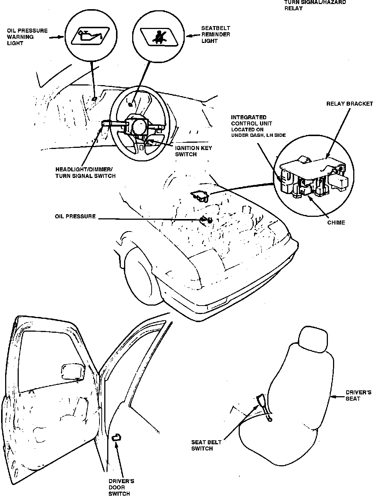

Operation CHARM
: Car repair manuals for everyone.
Home
>>
Acura
>>
1987
>>
Integra L4-1590cc 1.6L DOHC FI
>>
Repair and Diagnosis
>>
Powertrain Management
>>
Computers and Control Systems
>>
Relays and Modules - Computers and Control Systems
>>
Body Control Module
>>
Locations
Body Control Module: Locations
Warning Indicators Components.:

Under Dash LH Side
Applicable to: 1987-88 Integra